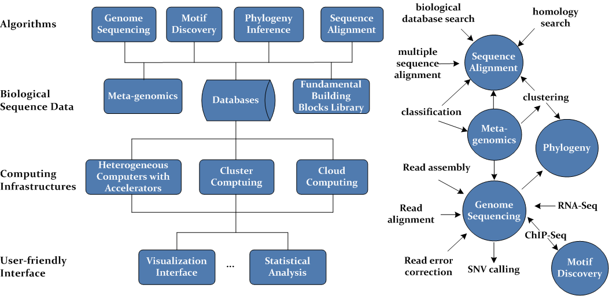
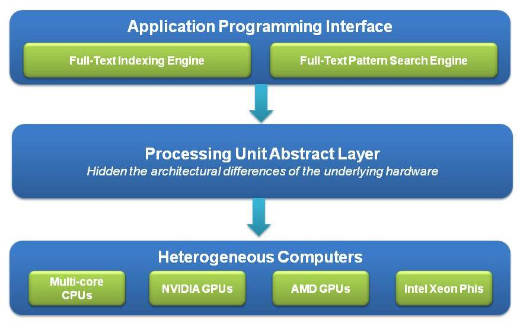
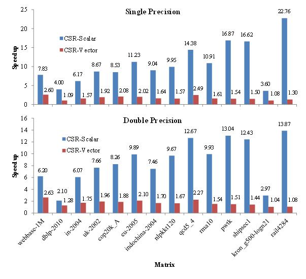
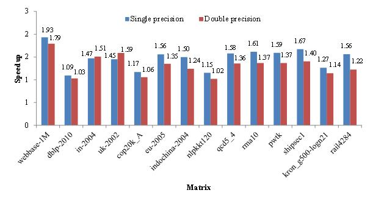

LESSA: a Library of Efficient, Scalable and Service-oriented Algorithms
1. Large-Scale Biological Sequence Analysis System
As part of my LESSA library, this project has been the core of my research on parallel and distributed algorithm design for bioinformatics, by employing a variety of tightly-coupled and loosely-coupled computing architectures, including heterogeneous computers with accelerators (e.g. Intel SSE, Intel AVX, Intel Xeon Phis, NVIDIA GPUs and AMD GPUs), cluster computing and cloud computing. My final objective is to establish an analysis system for large-scale biological sequences, in order to solve some critical and bottleneck problems in bioinformatics and computational biology, such as genome sequencing based on high-throughput sequencing technologies, meta-genomics, motif discovery, sequence alignment, and phylogenetic inference. Fig. 1 illustrates the diagram of an imaginaory biological data analysis system.
| 
|
|
Fig. 1 System diagram for large-scale biological sequence analysis
|
Example work: (The full lists of my software and publications are available here)
- Liu Y, Maskell DL, Schmidt B: "CUDASW++: optimizing Smith-Waterman sequence database searches for CUDA-enabled graphics processing units". BMC Research Notes, 2009, 2:73
- Liu Y, Schmidt B, Maskell DL: "MSA-CUDA: multiple sequence alignment on graphics processing units with CUDA". 20th IEEE International Conference on Application-specific Systems, Architectures and Processors (ASAP 2009), 2009, 121-128 (Best Paper Award)
- Liu Y, Schmidt B, Maskell DL: "MSAProbs: multiple sequence alignment based on pair hidden Markov models and partition function posterior probabilities". Bioinformatics, 2010, 26(16): 1958 -1964
- Liu Y, Schmidt B, Liu W, Maskell DL: "CUDA-MEME: accelerating motif discovery in biological sequences using CUDA-enabled graphics processing units". Pattern Recognition Letters, 2010, 31(14): 2170 - 2177
- Liu Y, Schmidt B, Douglas L. Maskell: "CUDASW++2.0: enhanced Smith-Waterman protein database search on CUDA-enabled GPUs based on SIMT and virtualized SIMD abstractions". BMC Research Notes, 2010, 3:93
- Liu Y, Schmidt B, Maskell DL: "Parallelized short read assembly of large genomes using de Bruijn graphs". BMC Bioinformatics, 2011, 12:354
- Kuttippurathu L, Hsing M, Liu Y, Schmidt B, Maskell DL, Lee K, He A, Pu WT, and Kong SW: "CompleteMOTIFs: DNA motif discovery platform for transcription factor binding experiments". Bioinformatics, 2011, 27(5): 715-717
- Liu Y, Schmidt B, Maskell DL: "CUSHAW: a CUDA compatible short read aligner to large genomes based on the Burrows-Wheeler transform". Bioinformatics, 2012, 28(14): 1830-1837
- Liu Y and Schmidt B: "Long read alignment based on maximal exact match seeds". Bioinformatics, 2012, 28(18): i318-i324 (also from ECCB 2012)
- Liu Y, Schroeder J, Schmidt B: "Musket: a multistage k-mer spectrum based error corrector for Illumina sequence data". Bioinformatics , 2013, 29(3): 308-315
- Liu Y, Wirawan A, Schmidt B: "CUDASW++ 3.0: accelerating Smith-Waterman protein database search by coupling CPU and GPU SIMD instructions". BMC Bioinformatics, 2013, 14:117.
- Liu Y, Schmidt B: "CUSHAW2-GPU: empowering faster gapped short-read alignment using GPU computing". IEEE Design & Test, 2014, 31(1): 31-39
- Ripp F, Krombholz CF, Liu Y, Weber M, Schaefer A, Schmidt B, Koeppel R, Hankeln T: "All-Food-Seq (AFS): a quantifiable screen for species in biological samples by deep DNA sequencing". BMC Genomics, 2014, 15:639
- Liu Y, Tran TT, Lauenroth F, Schmidt B: "SWAPHI-LS: Smith-Waterman algorithm on Xeon Phi coprocessors for long DNA sequences". 2014 IEEE International Conference on Cluster Computing (Cluster 2014), 2014, pp. 257-265 (Best Paper Award Recommendation)
- Liu Y, Schmidt B: "SWAPHI: Smith-Waterman protein database search on Xeon Phi coprocessors". 25th IEEE International Conference on Application-specific Systems, Architectures and Processors (ASAP 2014), 2014, pp. 184-185
- Liu Y, Loewer M, Aluru S, Schmidt B: "SNVSniffer: an integrated caller for germline and somatic SNVs based on Bayesian models". 2015 IEEE International Conference on Bioinformatics and Biomedicine (BIBM15), 2015, pp. 83-90.
- Liu Y, Loewer M, Aluru S, Schmidt B: "SNVSniffer: an integrated caller for germline and somatic single-nucleotide and indel mutations". BMC Systems Biology, 2016, 10(Suppl 2):47
- Pan T, Flick P, Jain C, Liu Y and Aluru S: "Kmerind: A flexible parallel library for k-mer indexing of biological sequences on distributed memory systems". 7th ACM Conference on Bioinformatics, Computational Biology, and Health Informatics (ACM-BCB 2016), 2016, pp. 422-433
- Chan Y, Xu K, Lan H, Liu W, Liu Y and Schmidt B: ”PUNAS: a parallel ungapped-alignment-featured seed verification for next-generation sequencing read alignment”. 31st IEEE International Parallel and Distributed Processing Symposium (IPDPS 2017), 2017, accepted.
- Lan H, Liu W, Liu Y and Schmidt B: ”SWhybrid: a hybrid parallel framework for large-scale protein sequence database search”. 31st IEEE International Parallel and Distributed Processing Symposium (IPDPS 2017), 2017, accepted.
|
2. Parallel Full-Text Search and Pattern Search
As part of my LESSA library, this project aims to design parallel and memory-efficient algorithms for full-text indexing and pattern search. In particular, I will investigate the parallel and space-efficient construction of four popular full-text indexing data structures: Burrows-Wheeler transform, FM-index, suffix array and enhanced suffix array, on heterogeneous computing architectures comprising multi-core CPUs and accelerators (specifically, NVIDIA and AMD GPUs and Intel Xeon Phi coprocessors). Based on these indexing data structures, I will further explore full-text pattern search, e.g. searching for maximal exact matches, super maximal exact matches, and approximate pattern matches, which is fudamental and critical to a myriad of applications in various fields such as Bioinformatics (e.g. next-generation sequencing read alignment and genome assembly) and text/data mining.
Both full-text indexing and full-text pattern search engines will be ultimately offered in the form of a library. The libray will provide a unified high-level programming interface for different types of the underlying processing units, which will enhance the productivity of developers and enables performance portability between multi-core CPUs and accelerators. Furthermore, on a heterogeneous computer with accelerators, this library intends to have the capability of autonomously selecting the "most efficient" parallelization, which may run on any of the different types of processing units or even on some hybrid combinations, at runtime. In this fashion, while deploying the parallel algorithms from the library, developers do not need to care more about the details of the underlying hardware configuration, and thereby can pay more attention to the development of other parts of a program. Fig. 2 shows the high-level system diagram for my parallel full-text indexing and pattern search project.
| 
|
|
Fig. 2 System diagram for parallel full-text indexing and pattern search
|
Example work:
Full-text Indexing
Full-text Pattern Search
|
3.Compute Unified Parallel Building Blocks (CUPBB)
This project aims to build a Compute Unified Parallel Building Blocks (CUPBB) template library using heterogeneous computing. This library will contain popular fundamental building blocks for scientific computing and data science, including, but not limited to, sparse linear algebra (e.g. SpMV), scan, reduction, sort, k-nearest neighbors and etc. For example, sparse linear algebra is recognized as one of the seven dwarfs By UC Berkeley, for parallel computing research, and is believed to be of high importance to science and engineering in the coming years. As an essential primitive in sparse linear algebra, sparse matrix-vector multiplication (SpMV) has garnered intense scientific attention and has been used in a variety of scientific computing applications such as bioinformatics, data mining, graph analytics and iterative methods in scientific computing. I have done some work on parallel sparse linear algebra on CUDA-enabled GPUs and parallel pairwise correlation computation on Intel Xeon Phi clusters for data science (e.g. for feature selection in machine learning)
|  |
 |
|
Fig. 3 (a) speedups of LightSpMV over CUSP on a Telsa K40c GPU and (b) speedups over cuSPARASE on a Tesla K40c GPU
|
Example work:
- Liu Y, Schmidt B: "LightSpMV: faster CSR-based sparse matrix-vector multiplication on CUDA-enabled GPUs". 26th IEEE International Conference on Application-specific Systems, Architectures and Processors (ASAP 2015), 2015, pp. 82-89 (Best Paper Award)
- Liu Y, Schmidt B: "LightSpMV: faster CUDA-compatible sparse matrix-vector multiplication using compressed sparse rows". Journal of Signal Processing Systems, 2017, doi:10.1007/s11265-016-1216-4.
- Liu Y, Pan T and Aluru S: "Parallel pairwise correlation computation on Intel Xeon Phi clusters". 28th International Symposium on Computer Architecture and High Performance Computing (SBAC-PAD 2016), 2016, pp. 141-149.
- Liu Y and Aluru S: "LightScan: faster scan primitive on CUDA compatible manycore processors". arXiv:1604.04815, 2016
- Liu Y, Pan T, Green O and Aluru S: "Parallelized Kendall's tau coefficient computation via SIMD vectorized sorting on many-integrated-core processors". Journal of Parallel and Distributed Computing, 2017, submitted [arXiv]
|